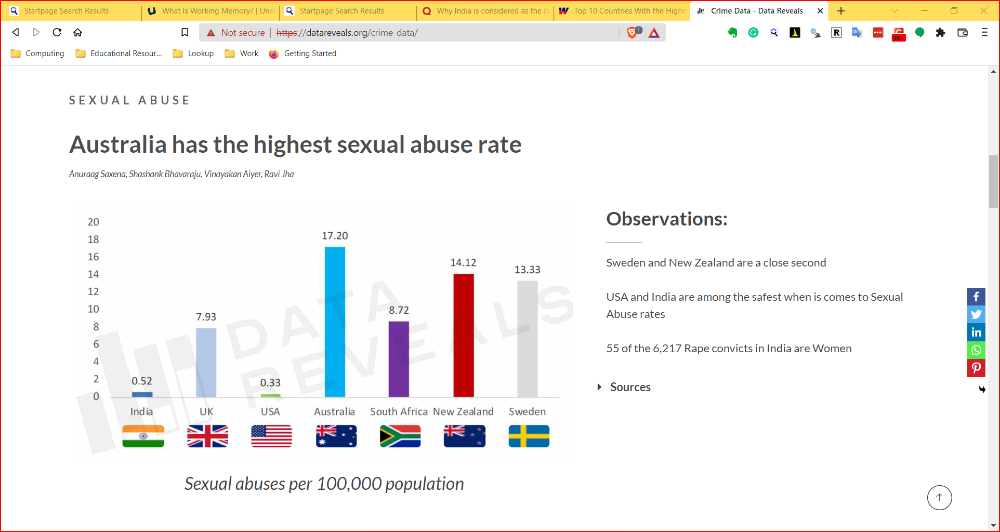

Why Visualize?
- We can digest information more easily when it is pictorial
- Our Working
Memories
are both short-term and limited in capacity. So a picture
abstracts the details and presents us with an overall summary, an
insight, or a story that is both easy to recall and easy on
retention.
- Data Viz includes shapes that carry strong cultural memories and impressions for us. These cultural memories help us to use data viz in a universal way to appeal to a wide variety of audiences. (Do humans have a gene for geometry?)
- It helps sift facts and mere statements: for example:

Figure 1: Source https://www.deccanherald.com/national/india-is-known-as-the-rape-capital-of-the-world-rahul-783495.html

Figure 2: Source https://datareveals.org/crime-data/